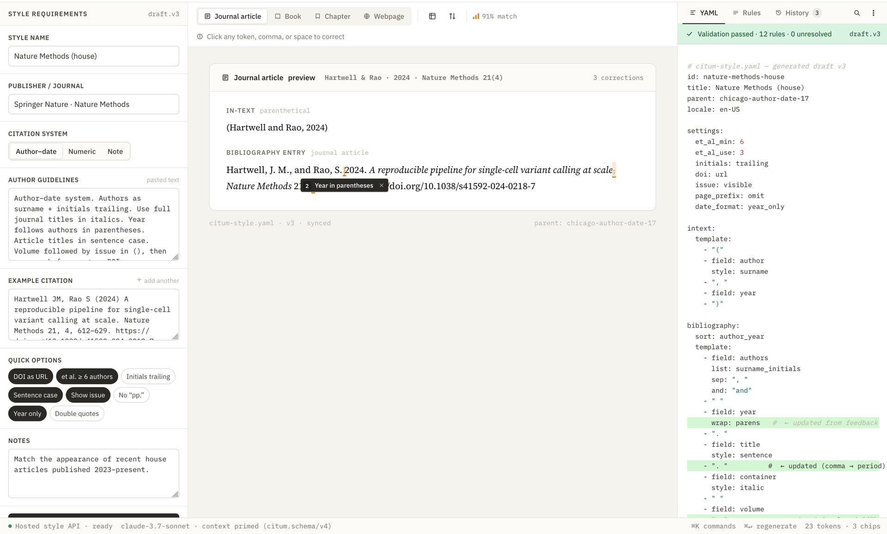

AI skill for Citum style authoring
A new external skill teaches Claude Code and other AI agents how to author, extend, and validate Citum YAML styles without a local citum-core checkout.
AI skill for Citum style authoring
We've published a new AI skill for Citum style authors: citum/skills.
Install it in Claude Code or any skills-compatible agent with one command:
npx skills add citum/skills
Note: as I write this in mid-2026, I've confirmed this skill works well with both Claude Code and Codex.
What it does
Style authoring is a domain LLMs get wrong in a predictable way.
Ask an agent to "create a Citum citation style" without guidance, and it reaches for what it knows: CSL's macro system — <macro> elements, name lists, template references.
None of that exists in Citum.
The skill addresses this by frontloading a Structural Model section that explains how Citum actually works:
- Style-level inheritance (
extends: apa-7th): inherit an entire compiled-in base style and override only what differs. - Type-variant diffs: within
bibliography.type-variants, each entry is either a full component list or a structural diff —modify,remove, andaddoperations keyed by component selectors.
A selector like match: {variable: doi} targets a specific component in the parent template.
Getting it wrong produces silent errors, which is why the skill also mandates a Research Parent phase: read the parent type's actual component list before writing any selector.
Validation workflow
Full CLI validation is available as long as citum is on your PATH.
The skill treats citum check --strict as the first gate — fast schema validation that catches unknown fields before you spend time on rendering.
Then citum render refs confirms the output is correct.
The skill works without a local citum-core checkout; it fetches the published JSON Schema and reads example styles from GitHub.
If you do have a local citum-core repository checkout, the skill can take full advantage of it: rather than consulting the published schema, it reads the style engine's source directly, which gives more precise field guidance. This is mainly useful for contributors working on the engine itself — the skill works well either way.
Porting from CSL
If you have an existing .csl style file and want to convert it to Citum, just ask — the skill handles the process for you.
When citum-migrate is available, the skill uses it to do the heavy lifting: it translates the CSL XML automatically, then validates the result and cleans up anything that needs attention. If the migrator isn't installed, the skill falls back to translating the style manually, using the Citum schema and existing styles as reference.
One of the more useful outcomes of migration is a minimal result. If your CSL style is already based on a format Citum knows — APA, Chicago, IEEE, and so on — the skill can often produce just a short list of overrides rather than a full style definition. That's easier to read, easier to maintain, and usually a much better starting point for further customization:
citum-migrate style.csl > style.yaml
citum check -s style.yaml --strict
Getting started
Install citum and citum-migrate:
curl -fsSL https://github.com/citum/citum-core/releases/latest/download/install.sh | CITUM_COMPONENTS=citum,citum-migrate sh
Then add the skill:
npx skills add citum/skills
Example prompts that trigger it:
- Create a Citum style for Chemical Communications — numeric, author initials, italic journal titles.
- Extend apa-7th: remove page numbers from chapter entries.
- Migrate abc.csl to Citum and keep it minimal if it extends a known parent.
- Validate my style.yaml and explain any errors.
Future possibilities
As I suggested above, today, the models in Claude Code and Codex are the most adept at this sort of work. But it should work with other models too, and my hope is that open alternatives evolve enough over the next year or so that they can provide a viable alternative. I should also add I haven't myself tested the best of the latest open models.
Regardless, when they are capable enough, I am thinking, this sort of logic could be cheaply integrated into a web app. Here, for example, is a mockup of an idea that Claude Design came up with.

Source and issue tracker: github.com/citum/skills.